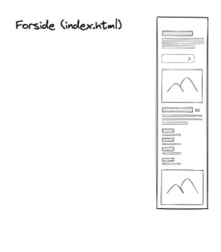
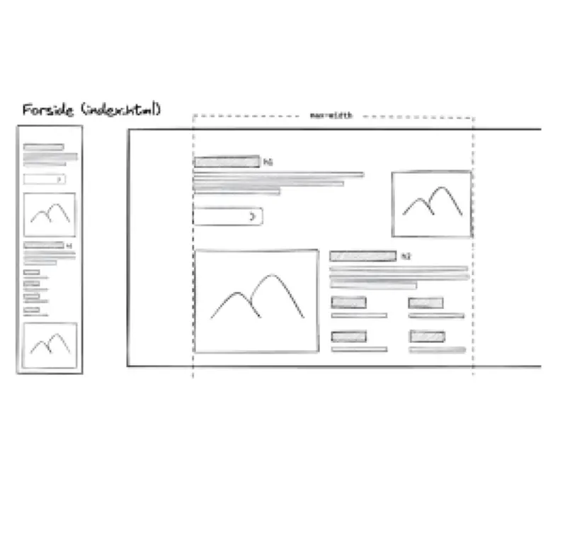
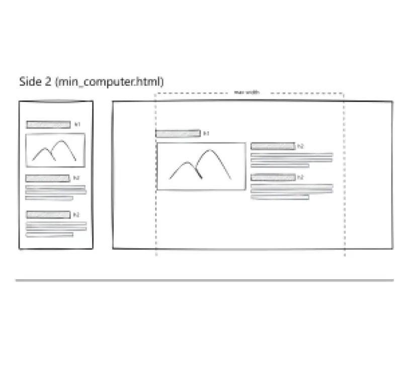
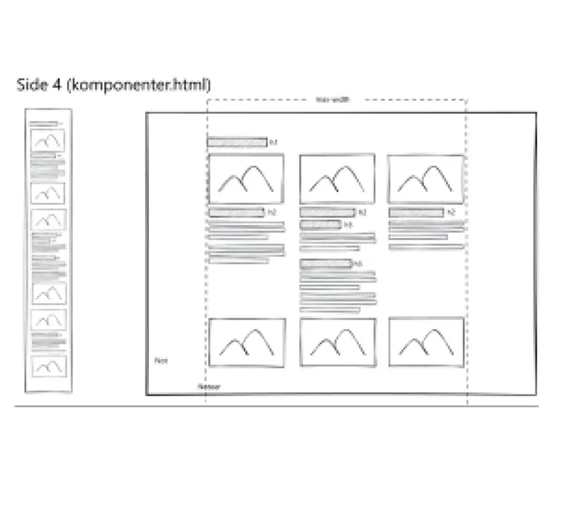
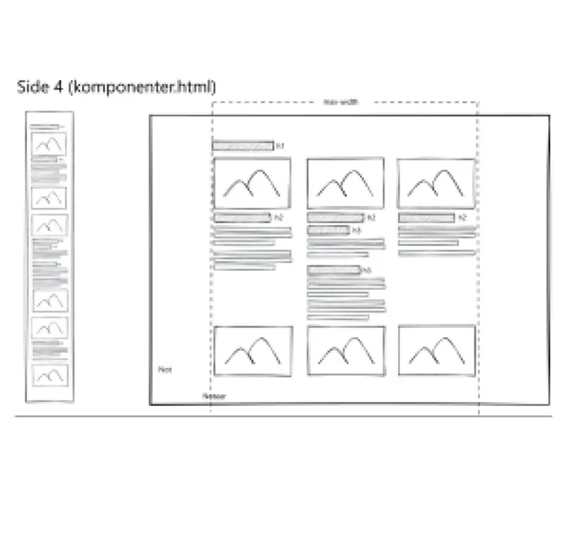

Tema 2 - Grundlæggende web
TilbageI tema 2 arbejdede jeg med det grundlæggende web. Her var jeg med til at udvikle en hjemmeside helt fra dens fundament, der har fokus på en mobile-first tilgang. Jeg begyndte først med mobilsite, hvor jeg oprettede flere HTML-sider, som er forbundet med en navigation, så indholdet er nemt at finde. Jeg brugte så semantiske HTML-elementer som header, nav, main og footer, for at gøre det klar og velstruktureret. Derudover det arbejdede jeg videre på semantik og HTML-struktur til mobilversionen. Derefter i CSS justerede jeg lidt frem og tilbage med margin og padding, så der komme mere plads og afstand, samt luft for at gøre det mere pænere ud. Herefter arbejdede jeg videre på hjemmesiden fra mobilsite til desktop ved hjælp af media querries, som tilpassede layoutet til andre skærmstørrelser. Her fik jeg udleveret en wireframe og et layoutdiagram, hvor jeg arbejdede med layout, spacing, content og typografi. Desuden arbejdede jeg også med optimering af billeder og brugte den online-værktøj Squoosh til at komprimere billeder i mindre filstørrelse uden at man kan se, at kvalitetet er blevet dårligere via tilpasning til web.
Ud fra dette tema har jeg lært, hvordan man opbygger en hjemmeside både desktop og mobil med hjælp af HTML, CSS og media querries. I øvrigt har jeg fået en bedre forståelse for mobil først og for, hvordan media querries anvendes til at tilpasse layoutet til andre skærmstørrelser. Ud fra det lærte jeg også, hvor vigtig planlægning med wireframes og layoutdiagram, samt med layout har stor betydning for, hvordan brugeren oplever hjemmesiden. Derudover det har jeg fået en forståelse for, at optimering af billedestørrelse har betydning for sidens performance og hastighed, herunder andre apparater fx mobiltelefon.
"Mobilsite" version 1 uden grid



Klik på knapperne for at læse mere om projektet
"Website product" version 2 med grid
  


Klik på knapperne for at læse mere om projektet